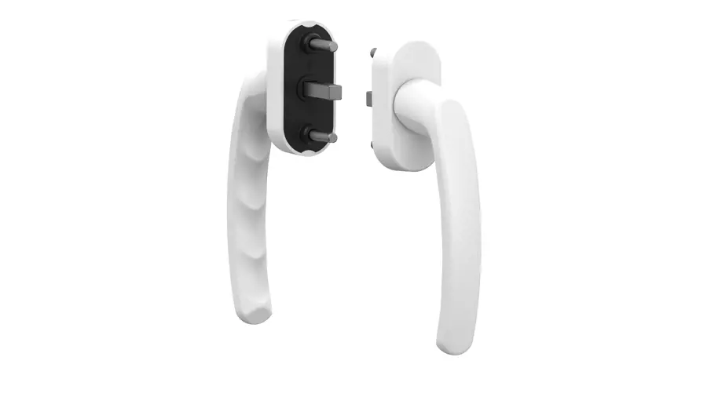
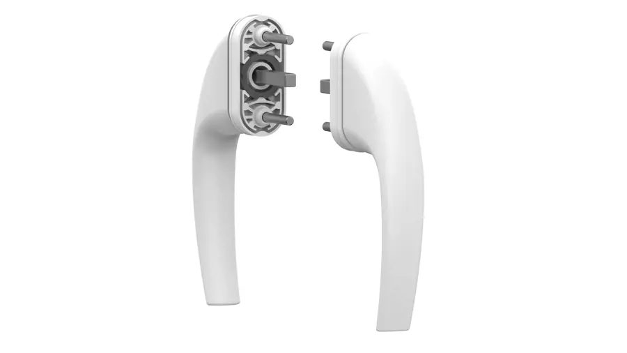
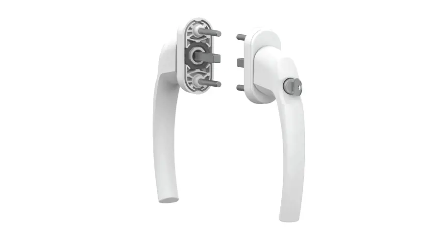
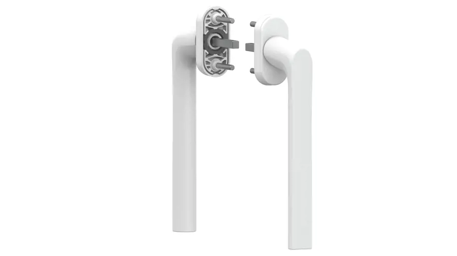
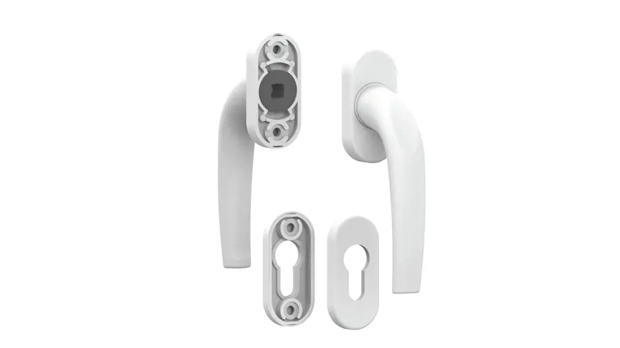
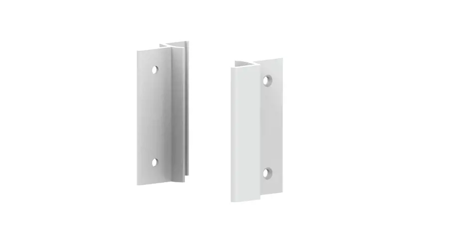

PVC, ahşap ve alüminyum doğrama sistemleri için geliştirdiğimiz dört ana ürün grubu. Her biri kendi kalıphanemizde tasarlanıp ISO 9001 standartlarında üretiliyor.

Farklı malzeme ve mekânlara uygun, modern ve dayanıklı kapı kolu çözümleri sunuyoruz. Alüminyum döküm gövde, uzun ömürlü yüzey kaplaması ve ergonomik tutuş geometrisiyle hem konut hem ticari projelerde tercih ediliyor.




PVC ve ahşap pencere sistemleri için geliştirilen kol serimiz, tam otomatik üretim hattımızda üretilen ispanyolet mekanizmalarıyla uyumlu çalışır. Yüksek tekrar sayısına dayanıklı iç mekanizma ve akıcı tutuş formu sunar.


Sürgülü sistemlere özel, ergonomik tutuş sağlayan şık ve kullanışlı kollar geliştiriyoruz. Alüminyum profil sistemlerine uygun ölçülendirme ve ağır kanatlarda dahi akıcı hareket sağlayan mekanik yapı sunar.



Sürme sistemler ve kapı uygulamaları için tutamak ve rozet çözümleri. Kilit göbeği, anahtar ve kol montaj noktalarını hem koruyan hem de görsel bütünlüğü tamamlayan tamamlayıcı ürün grubumuz.